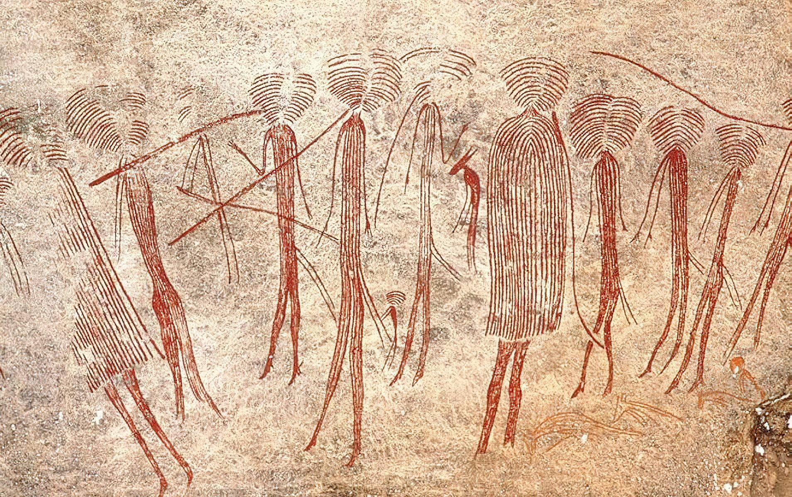
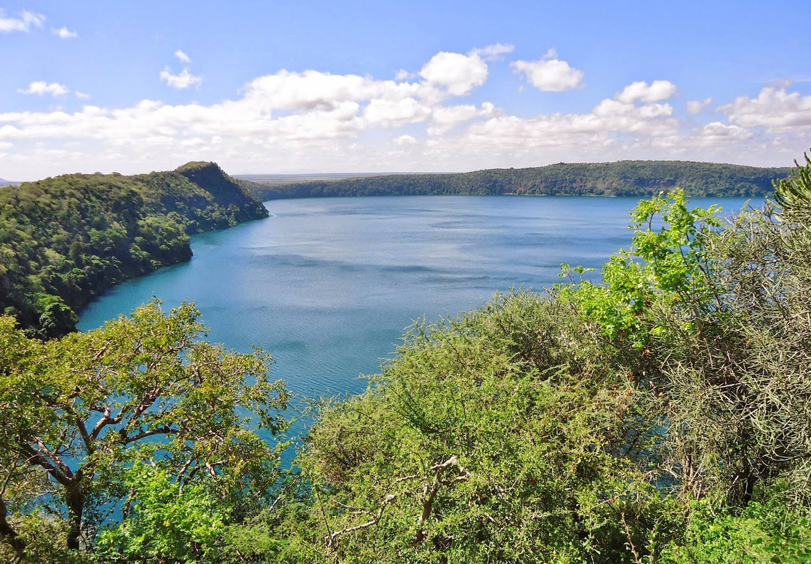
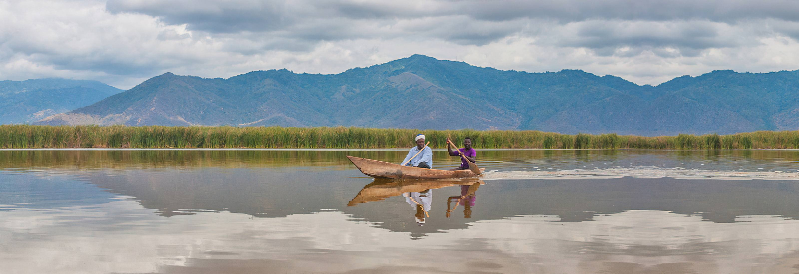
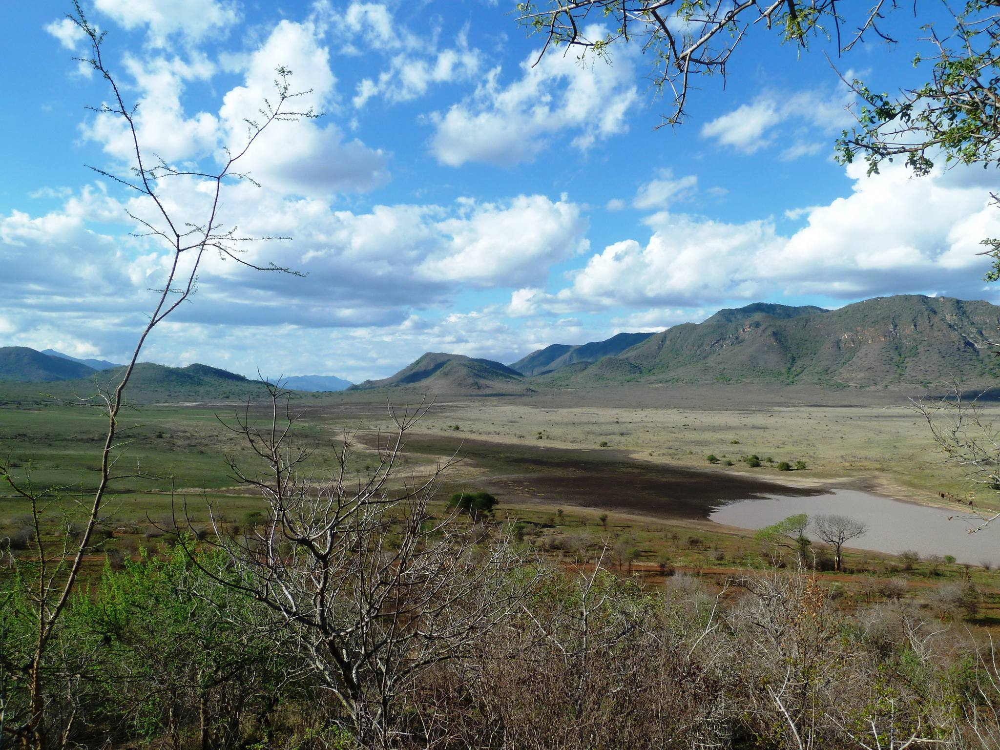
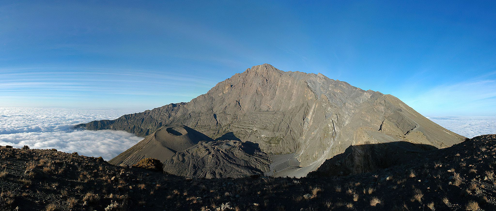
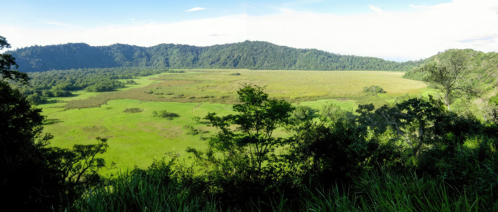
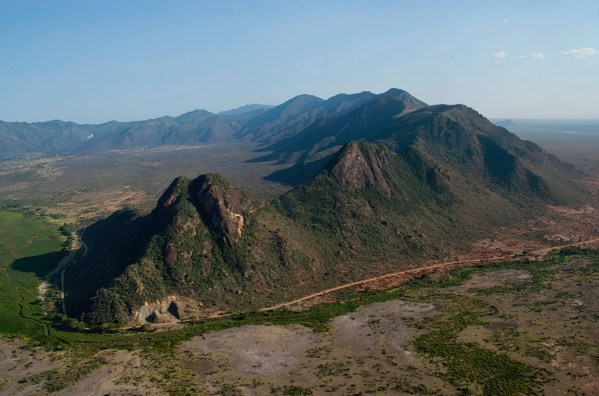

Tanzania's flagship safari corridor - endless plains, volcanic craters and Africa's highest peak, all within reach of Arusha and Kilimanjaro International Airport.
Destinations in this Circuit

Arusha National Park
It is a popular destination for day trip visitors who are about to embark from the town of Arusha on longer northern…

Kondoa Rock Art Sites
Cave paintings in Kondoa Irangi are among the world most ancient examples of the human artistic expression.

Lake Chala
Lake Chala, also known as Lake Challa, is a crater lake that straddles the border between Kenya and Tanzania.

Lake Eyasi
Meet the Hadzabe hunter-gatherers and Datoga pastoralists on a soda lake shore.

Lake Jipe
It is 12 km long and 2.5 km wide, 12 square km belong to Tanzania and 14 square km to Kenya.

Lake Manyara National Park
Tree-climbing lions, flamingo shores and Rift Valley escarpment views.

Lake Natron
Lake Natron is a salt or soda lake not far from Lake Manyara in northern Tanzania. It is located in the Gregory Rift,

Mkomazi National Park
Black rhino sanctuary and wild dog recovery on the Pare and Usambara foothills.

Mount Kilimanjaro
Conquer Africa's highest peak - from rainforest to glacier via multiple trekking routes.

Mount Meru
Climbing Mount Meru requires more technical climbing skills than the routes on Kilimanjaro. What Mount Meru ‘lacks’…

Mount Ol’doinyo Lengai
"Oldoinyo Lengai" means “The Mountain of God” in the Maasai language.

Ngorongoro Conservation Area
Descend into Africa's Eden - a volcanic caldera teeming with black rhino, elephant and lion.

Ngurdoto Crater
Ngurdoto Crater is a volcanic crater in Arusha Region, and its crater is shaped like a basin with very steep walls…

Pare Mountains
The North Pare Mountains and the South Pare Mountains are located in northeastern Tanzania.
Serengeti National Park
Witness the Great Migration and Africa's greatest concentration of plains game on endless golden savanna.

Tarangire National Park
Ancient baobabs and massive elephant herds along the life-giving Tarangire River.
Safari Packages

Day Trip to Arusha National Park
From $638 / person
The park is at the base of Mount Meru, which is good for climbing. It has a range of habitats including forest - home to the black-and-white colobus monkey - and is excellent for b
View Itinerary
Day Trip to Lake Chala
From $638 / person
Lake Chala, also known as Lake Challa, is a crater lake that straddles the border between Kenya and Tanzania on the eastern edge of Mount Kilimanjaro, 8km north of Taveta and 55 km
View Itinerary
Day Trip to Lake Jipe
From $638 / person
Lake Jipe is an inter-territorial lake straddling the borders of Kenya and Tanzania. On the Kenyan side, it is located south of the village of Nghonji while on the Tanzanian side,
View Itinerary
Day Trip to Lake Manyara National Park
From $638 / person
On the edge of the Rift Valley, Lake Manyara National Park is small, but its diverse eco-systems pack in a huge variety of animal and birdlife. It is rightly famous for its tree-cl
View Itinerary
Day Trip to Lake Natron
From $638 / person
Enjoy the 1 or 2 Days Lake Natron Tour in Tanzania as you visit this home to 2 million of lesser flamingos, The lake is in the vicinity of Ol Doinyo Lengai, which is visible on the
View Itinerary
Day Trip to Mount Meru Waterfalls Hike
From $638 / person
A Day Trip to Mount Meru Waterfalls Hike is an amazing one-day trekking adventure to the foothills of Mount Meru. Mount Meru is located inside Arusha National Park in Tanzania. Thi
View Itinerary
Day Trip to Ngorongoro Crater
From $638 / person
A visit to the Ngorongoro Crater is an experience of a lifetime. There are few places that have wildlife densities and variety on this level. It is not unusual to see the Big Five
View Itinerary
Day Trip to South Pare Mountains
From $638 / person
A hike through Southern Pare Mountains takes visitors through local villages and beautiful forests, and offers an opportunity to explore roads less traveled. On the top of Mountain
View Itinerary
Day Trip to Tarangire National Park
From $638 / person
Tarangire is one of the more seasonal parks in northern Tanzania, with a lot of migratory movement within the greater Tarangire ecosystem. In the Dry season, between June and Octob
View Itinerary
Day trip to Mkomazi National Park
From $638 / person
This is best option of wildlife enthusiast who likes to spot the rarest species of flora and fauna. It is also suitable for travelers who came to climb Mount Kilimanjaro and they h
View Itinerary3 Days Serengeti & Ngorongoro
From $2,150 / person
Compact northern safari - Serengeti plains and Ngorongoro Crater for travellers with limited time.
View Itinerary4 Days Lake Eyasi Cultural Safari
From $1,750 / person
Meet Hadzabe hunter-gatherers and Datoga pastoralists on the shores of Lake Eyasi, combined with Ngorongoro highlands scenery.
View Itinerary
4 Days Tarangire & Manyara Safari
From $1,850 / person
A compact northern safari pairing Tarangire's elephant herds with Lake Manyara's forest and flamingo shoreline - ideal for short stays.
View Itinerary
5 Days Northern Classic Safari
From $2,950 / person
Tarangire, Serengeti, Ngorongoro and Lake Manyara - the essential northern parks in five expertly paced days.
View Itinerary
6 Days Serengeti & Ngorongoro Safari
From $3,350 / person
Focused Serengeti and Ngorongoro itinerary - maximum time on the plains and crater floor for Big Five enthusiasts.
View Itinerary7 Days Northern Circuit Safari
From $4,200 / person
The ultimate northern Tanzania safari - Tarangire, Manyara, Serengeti and Ngorongoro with extended time on the plains.
View Itinerary
Kilimanjaro Machame 7-Day Trek
From $2,800 / person
Summit Africa's highest peak via the scenic Machame Route - excellent acclimatisation through diverse climate zones.
View Itinerary
2 Days Ol Doinyo Lengai Mountain Climbing
Price on request
The 2 Days Ol Doinyo Lengai Mountain Climbing will take you to this active Volcano known as the mountain of God, Ol Doinyo Lengai will give you the best adventure safari as you exp
View Itinerary
2 Days Safari to Lake Natron and Mount Oldoinyo Lengai
Price on request
Enjoy the 2 Days Lake Natron Tour in Tanzania as you visit this home to 2 million of lesser flamingos as well as visit to Mount Oldoinyo Lengai and the views along the road to get
View Itinerary
2 Days to Lake Manyara National Park & Ngorongoro Crater
Price on request
2 Days Northern Tanzania Safari to Lake Manyara and Ngorongoro Crater, If you're pressed for time two beautiful days in Lake Manyara National Park and the world-famous Ngorongoro C
View Itinerary
2 Days to Tarangire National Park & Ngorongoro Crater
Price on request
2 Days expedition to Tarangire National Park and Ngorongoro Crater in Tanzania offers a collection of memorable experiences in a short while. This Safari lets you explore one of Af
View Itinerary
3 Days Mount Meru Climb
Price on request
The 3 days Mount Meru climb takes you to the peak of Mount Meru (4562 m) using the mountain’s, only route, the Momella Route. Climbing can be attempted for three days but we highly
View Itinerary
3 Days Ol Doinyo Lengai Mountain Climbing
Price on request
The 3 Days Ol Doinyo Lengai Mountain Climbing will take you to this active Volcano known as the mountain of God, Ol Doinyo Lengai will give you the best adventure safari as you exp
View Itinerary
3 Days to Ngorongoro Crater, Tarangire & Lake Manyara National Parks
Price on request
3 days Tanzania safari to Tarangire, Ngorongoro Crater & Lake Manyara Parks gives you a great chance of spotting variety of wildlife and remarkable landscapes. During this short Ta
View Itinerary
3 Days to Serengeti National Park
Price on request
3 days safari to Serengeti National Park gives you a great chance of spotting variety of wildlife and remarkable wildebeests Migration. During this short safari there is a big poss
View Itinerary
4 Days Kilimanjaro Trek via Machame Route
Price on request
The 4 Days Kilimanjaro Short Trek via Machame route is referred as Special Kilimanjaro Climbing challenge to get to the summit for shortest period of time. It is NOT more affordabl
View Itinerary
4 Days Mount Meru Climb
Price on request
The 4 days Mount Meru climb takes you to the peak of Mount Meru (4562 m) using the mountain’s, only route, the Momella Route. Most alpines use Meru for acclimatization before the K
View Itinerary
4 Days to Lake Manyara, Serengeti National Parks and Ngorongoro Crater
Price on request
The 4 Days Safari takes you around the best Safari places in Tanzania, visiting places such as Lake Manyara which is famous for its tree climbing lions, The Ngorongoro Crater which
View Itinerary
4 Days to Serengeti National Park and Ngorongoro Crater
Price on request
The 4 Day Serengeti safari lets you experience the world’s greatest migration in the Serengeti, the big five animals in the Ngorongoro Crater includes various other animals and bi
View Itinerary
4 Days to Tarangire, Serengeti National Parks and Ngorongoro Crater
Price on request
The 4 Days Safari takes you around the best Safari places in Tanzania, visiting places such as Tarangire National Park, The Ngorongoro crater and Serengeti national park which will
View Itinerary
5 Days Hiking to Ngorongoro Highlands
Price on request
This 5-day trekking tour will takes you through the diverse landscapes of the Ngorongoro Crater Highlands. You will hike through grassy plains and the mountainous countryside as we
View Itinerary
5 Days Kilimanjaro Trek via Umbwe Route
Price on request
The Umbwe route is short, steep and direct route and its considered to be very difficult and challenging way up Mount Kilimanjaro. Due to the quick ascent, Umbwe does not provide t
View Itinerary
5 Days Lake Manyara, Serengeti and Ngorongoro Crater Safari
Price on request
A 5 day Safari to provide unlimited wildlife encounters in the heart of the Northern Tanzania Circuit. You’ll see what Lake Manyara National Park, Ngorongoro Crater (one of the wor
View Itinerary
5 Days Serengeti and Ngorongoro Crater Safari
Price on request
This tour offers you a 5-day Tanzania Migration Safari where your river crossing tour will take you to the Mara River for the spectacular migration crossing which is an experience
View Itinerary
5-6 Days Kilimanjaro Trek via Marangu Route
Price on request
The Marangu Route nick named (Coca Cola Route)is the oldest and most well established trekking route on Mount Kilimanjaro, and it remains extremely popular compare to others. This
View Itinerary
6 Days Kilimanjaro Trek via Machame Route
Price on request
The most popular route to the summit of Mount Kilimanjaro these days is Machame route, and for good reason. Forested traverse to Barafu. This trail offers stunning views, a reasona
View Itinerary
6 Days Kilimanjaro Trek via Rongai Route
Price on request
The Rongai route is the only route that approaches Kilimanjaro from the north, close to the Kenyan border, this route still experiences low crowds. Rongai has a more gradual slope
View Itinerary
6 Days Kilimanjaro Trek via Umbwe Route
Price on request
The Umbwe route is short, steep and direct route and its considered to be very difficult and challenging way up Mount Kilimanjaro. Due to the quick ascent, Umbwe does not provide t
View Itinerary
6 Days Ngorongoro Crater, Serengeti and Lake Manyara Safari
Price on request
A 6 day Safari to provide unlimited wildlife encounters in the heart of the Northern Tanzania Circuit. You’ll see what Ngorongoro Crater (one of the world’s eight natural wonders),
View Itinerary
6 Days Tarangire, Serengeti and Ngorongoro Crater Safari
Price on request
A 6 day Safari to provide unlimited wildlife encounters in the heart of the Northern Tanzania Circuit. You’ll see what Lake Manyara, Tarangire National Park, Ngorongoro Crater (one
View Itinerary
7 Days Kilimanjaro Trek via Lemosho Route
Price on request
The Lemosho Route is often considered the most beautiful of all the trekking trails up Mount Kilimanjaro. It crosses the entire Shira Plateau from west to east in a pleasant, relat
View Itinerary
7 Days Kilimanjaro Trek via Machame Route (Option 1)
Price on request
The most popular route to the summit of Mount Kilimanjaro these days is Machame route, and for good reason. Forested traverse to Barafu. This trail offers stunning views, a reasona
View Itinerary
7 Days Kilimanjaro Trek via Machame Route (Option 2)
Price on request
The most popular route to the summit of Mount Kilimanjaro these days is Machame route, and for good reason. Forested traverse to Barafu. This trail offers stunning views, a reasona
View Itinerary
7 Days Kilimanjaro Trek via Rongai Route
Price on request
The Rongai route is the only route that approaches Kilimanjaro from the north, close to the Kenyan border, this route still experiences low crowds. Rongai has a more gradual slope
View Itinerary
7 Days Kilimanjaro Trek via Shira Route
Price on request
The Shira Route is a little used trail that begins near Shira Ridge. It is nearly identical to the Lemosho route. In fact, Shira was the original route and Lemosho is the improved
View Itinerary7 Days Rift Valley Adventure to Engaruka, Lake Natron, Ol Donyo Lengai, Lobo, Serengeti and Ngorongoro
Price on request
This best great rift adventure you will travel thru the Great Rift Valley to the Northern tour sites of Tanzania for 1 night Engaruka ruins, 2 nights Lake Natron and Oldoinyo Lenga
View Itinerary
7 Days Tarangire, Ngorongoro, Serengeti, Lake Natron and Manyara Safari
Price on request
7 Day Safari that you will visit all the major safari national parks in the north of Tanzania and Lake Natron. On this tour awaits you especially extensive game drives in the Seren
View Itinerary
8 Days Hiking to Ngorongoro Highlands and Oldoinyo Lengai Trekking
Price on request
This 10 day trekking tour takes you to the diverse landscapes of the Ngorongoro Crater Highlands - Ngorongoro, Olmoti and Empakaai - eventually leading to Lake Natron where you hav
View Itinerary
8 Days Kilimanjaro Trek via Lemosho Route
Price on request
The Lemosho Route is often considered the most beautiful of all the trekking trails up Mount Kilimanjaro. It crosses the entire Shira Plateau from west to east in a pleasant, relat
View Itinerary8 Days Kilimanjaro Trek via Machame Route
Price on request
The most popular route to the summit of Mount Kilimanjaro these days is Machame route, and for good reason. Forested traverse to Barafu. This trail offers stunning views, a reasona
View Itinerary
9 Days Kilimanjaro Trek via Northern Route (Option 1)
Price on request
The Northern Circuit route is the newest route up Mount Kilimanjaro and arguably the best. That’s because it’s a combination of all of the best elements of the other routes with be
View Itinerary
9 Days Kilimanjaro Trek via Northern Route (Option 2)
Price on request
The Northern Circuit route is the newest route up Mount Kilimanjaro and arguably the best. That’s because it’s a combination of all of the best elements of the other routes with be
View Itinerary
Day Hike Kilimanjaro Shira Plateau
Price on request
Mount Kilimanjaro’s Shira Plateau is one of the most fascinating and scenic areas on Kilimanjaro. It’s also the oldest peak of Mount Kilimanjaro, at 3872m altitude.After a 7am pick
View Itinerary
Day Hike Mount Kilimanjaro via Machame Route
Price on request
1 Day Kilimanjaro hike via Machame Route is one of Short Kilimanjaro Trips for one Day Kilimanjaro Climb. This short Kilimanjaro trek you will experience the adventure of climbing
View Itinerary
Day Hike Mount Kilimanjaro via Marangu Route
Price on request
1 Day Kilimanjaro hike via Marangu Route is one of Short Kilimanjaro Trips for one Day Kilimanjaro Climb. This short Kilimanjaro trek you will experience the adventure of climbing
View Itinerary
Day Hike to North Pare Mountains
Price on request
A hike through Pare Mountains takes visitors through local villages and beautiful forests, and offers an opportunity to explore roads less traveled. On the top of Northern Pare Mou
View Itinerary
Day Tour Kondoa Rock-Art sites
Price on request
A day Tour to Kondoa Irangi Rock Paintings, located between Singida and Irangi Hills in Kolo village on the steep eastern slopes of the Masai escarpment bordering the Great Rift Va
View Itinerary
Kilimanjaro Trek via Western Breach
Price on request
The Western Breach is the steepest, but shortest, of all the non-technical final ascents of Kibo, and should not be lightly undertaken. It can be approached from the Machame, Umbwe
View ItineraryReady to explore the Northern Circuit?
Request a Quote